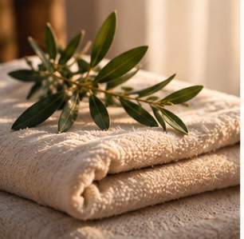

Hieronta
Vahvistetaan: kuvaus, kenelle hoito sopii ja mitä käynnillä tapahtuu
- Kesto
- Vahvistetaan
- Hinta
- Vahvistetaan
Konseptikuva
Olen Maija Viinikkala. Viimeistelen hierojakoulutustani ja perustan omaa vastaanottoa. Täältä löydät palvelut, käytännön tiedot ja yhteystiedot.
Hierontaan saa tulla juuri sellaisena kuin on.
Palvelut, kestot ja hinnat vahvistetaan ennen vastaanoton avaamista.
Vahvistetaan: kuvaus, kenelle hoito sopii ja mitä käynnillä tapahtuu
Käytännön tiedot ja vastaukset yleisimpiin kysymyksiin löydät alempaa.
Käytännön tiedotOlen Maija Viinikkala. Viimeistelen parhaillaan hierojakoulutustani ja olen perustamassa omaa vastaanottoa.
Vahvistetaan: tausta, koulutus ja valmistumisaika, työtapa

Nämä tiedot on hyvä tietää ennen ajanvarausta.
Vahvistetaan: Maijan oma kuvaus käynnin kulusta
Kysy rohkeasti, jos jokin askarruttaa ennen ensimmäistä käyntiä.
Puhelin: Vahvistetaan
Sähköposti: Vahvistetaan
Ajanvaraus: Vahvistetaan